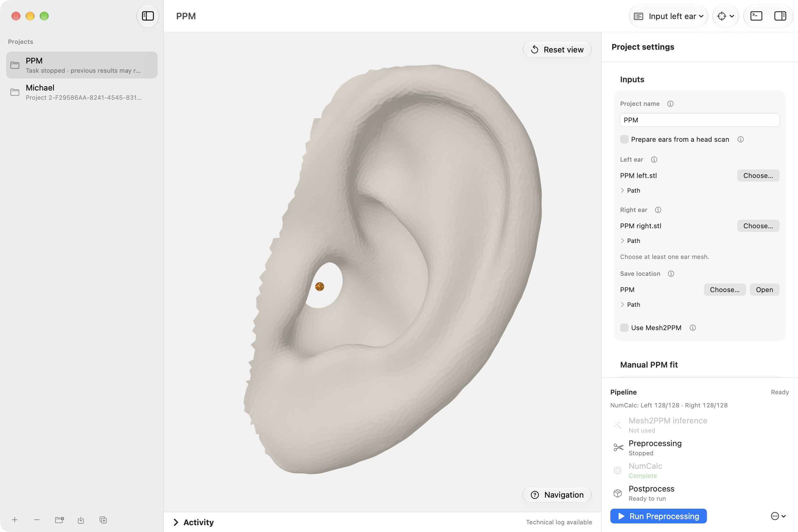
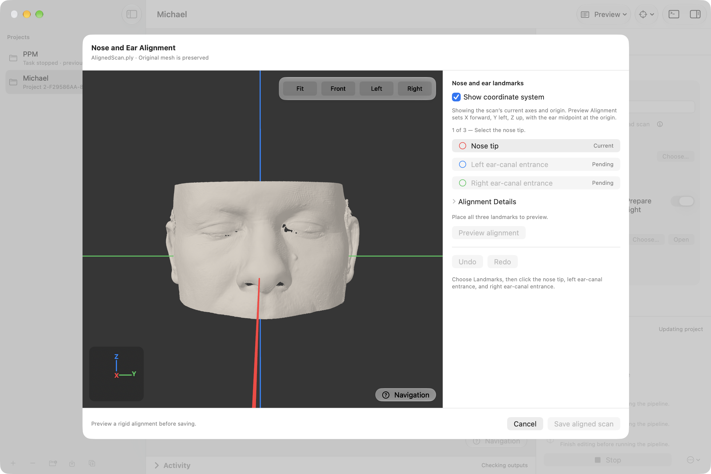
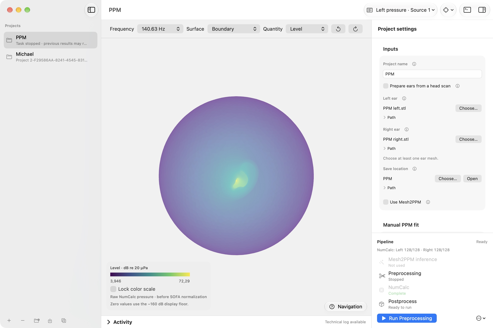
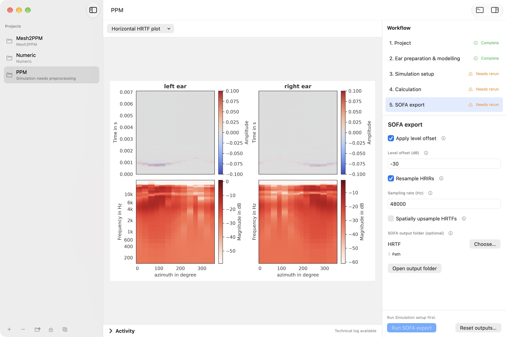

Turn an ear scan into your own HRTF.
Pinna2HRTF takes one or two ear meshes, simulates how sound arrives at them from every direction, and saves the result as SOFA files for spatial audio.
One window, from mesh to SOFA.

Three steps.



Start with an ear
Load one or two pinna meshes, or cut the ears out of a full-head scan right in the app. Mesh2PPM can optionally predict a refined ear surface.
Simulate the sound field
The app attaches the ear to a model head, sets up the simulation with Mesh2HRTF, and solves it with NumCalc. Watch the progress live and inspect the pressure on the surface.
Export for spatial audio
Save HRTFs and HRIRs in the SOFA format, look at them in the built-in plots, and resample or spatially upsample them if you need to.
What comes out.
- HRTF
- head-related transfer functionHow your ear filters a sound, for each direction it can come from.
- HRIR
- head-related impulse responseThe same information in the time domain: one short impulse response per direction.
- SOFA
- the file both are saved inA standard format for spatial acoustic data.
Get it. It's free.
Version 1.1.0. The installers bring their own Python, the Mesh2PPM models, and the simulation tools, so there is nothing else to set up.
SHA-256 checksums: macOS, Windows. The macOS app is ad-hoc signed and not notarized, and the Windows installer is not digitally signed, so your system may ask before the first launch. Windows on ARM is untested. Older versions are on the releases page.
prefer a terminal?
Every stage also runs from a Python CLI, one at a time or as a full run described in YAML. Clone the repository and install the locked environment with uv.
git clone https://github.com/Any2HRTF/Pinna2HRTF.git
cd Pinna2HRTF
uv sync --locked --python 3.11# then build the native tools once
# macOS / Linux: bash Scripts/prepare_external_tools.sh
# Windows: .\Scripts\prepare_windows_external_tools.ps1